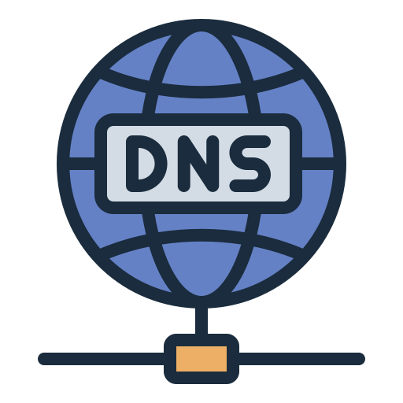
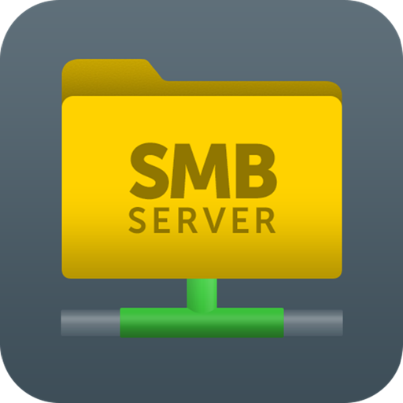
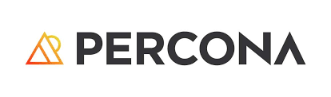

프로젝트 소개
이 페이지는 보안 로그 분석, 시스템 취약점 분석 및 모의 해킹(CTF) 등 심화된 보안 프로젝트들을 다룹니다. 다양한 도구와 기술을 활용하여 실제와 유사한 환경에서 보안 문제를 해결하는 과정을 확인하실 수 있습니다.
PROJECTS

CTF 풀이과정 - Venus

DNS, DB & LogAnalyzer 구축

자원 공유 서버 구축 (Samba/NFS)

PMM (Percona Monitoring) 구축

Linux 서버 보안 점검
Wazuh 구축
네트워크 보안 통합